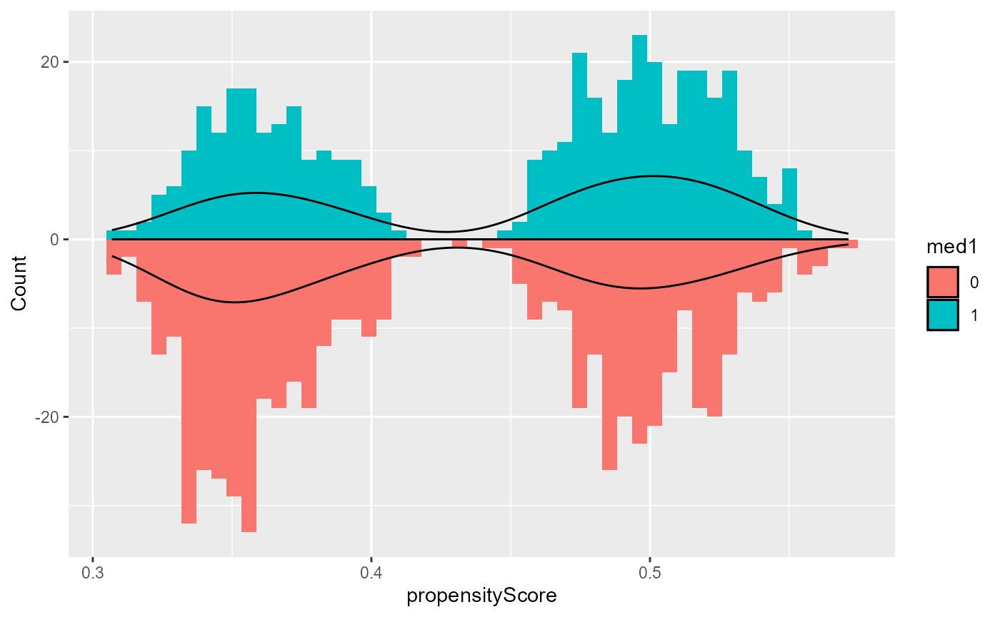
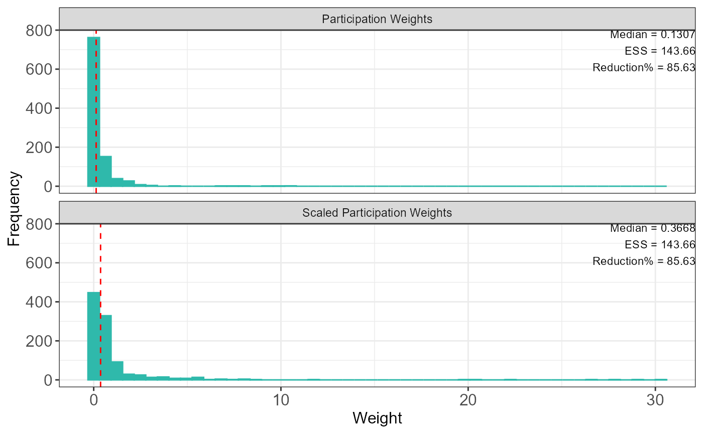
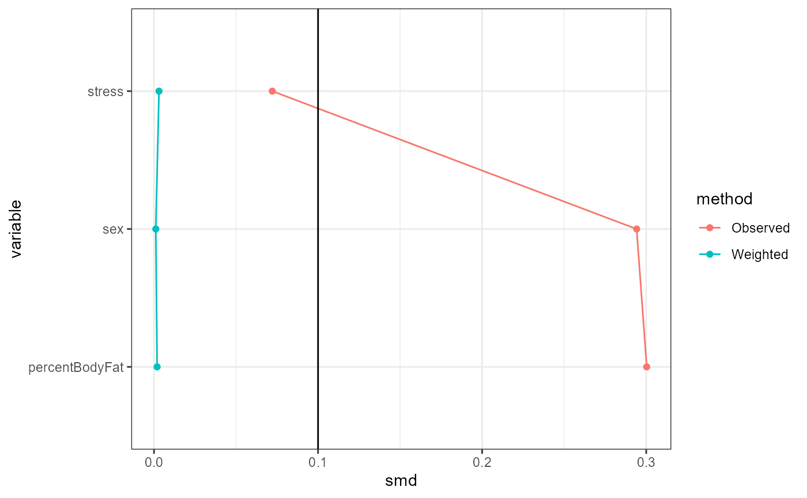
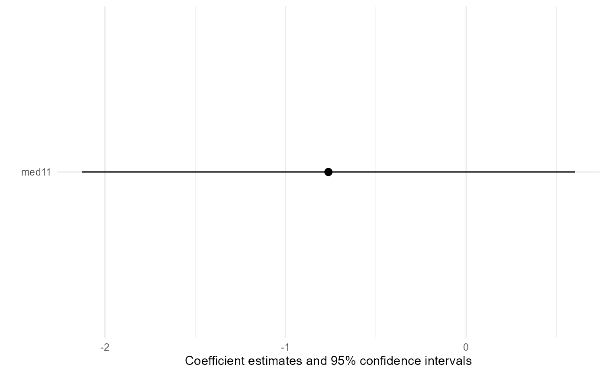

Target aggregate data adjustment transportability analysis
Core Clinical Sciences
transportTADA.RmdIntroduction
In this vignette, we demonstrate how to use
TransportHealth for weighting-based transportability
analysis when individual participant-level data (IPD) is available for
the original population, while only aggregate-level data (AgD) is
available for the target sample.
Brief introduction to Target aggregate data adjustment (TADA)
In transportability and generalizability analysis using target aggregate data adjustment (TADA), the process differs from traditional inverse odds of participation weighting (IOPW) or g-computation due to the absence of individual-level data (IPD) in the target population. Instead of using logistic regression to obtain weights that balance the distribution of effect modifiers in the source and target data, TADA uses a method of moments approach with the aggregate-level data (AgD) from the target population to account for effect modifiers. This is combined with the usual propensity score weighting approach to adjust for confounding in the source data to fit marginal structural models.
Example
Suppose we are interested in estimating the causal effect of a medication on systolic blood pressure in a target population, but we were only able to conduct an observational study using samples from the study population. To obtain unbiased causal effect estimates using the study sample, we account for the following covariates: sex, body fat percentage, and stress level.
We know that the effectiveness of the medication depends on two effect modifiers: 1) stress level, and 2) whether patients are taking another medication.
Note that the covariates adjusted for in the study data can also be effect modifiers.
Coded variables:
-
Medication -
med1-
1for treated -
0for untreated
-
Systolic blood pressure (SBP) -
sysBloodPressure(continuous)-
Sex -
sex-
1for male -
0for female
-
Body fat percentage -
percentBodyFat(continuous)-
Stress level -
stress-
1for stressed -
0for not stressed
-
-
Medication 2 -
med2-
1for treated -
0for untreated
-
Analyses
First, for the implementation of TADA in TransportHealth
specifically, the data from the study and target population should be in
separate data frames in the R environment. The study data
should contain IPS on response, treatment, covariates and effect
modifiers, while the target data should contain only aggregate-level
summary statistics of covariates and effect modifiers. These summary
statistics should be formatted as proportions, counts, means, medians
and standard deviations.
Suppose that we have the study and target data separately as follows.
names(testData)
#> [1] "studyData" "aggregateTargetData"
print("Study data:")
#> [1] "Study data:"
head(testData$studyData)
#> sysBloodPressure med1 sex stress med2 percentBodyFat
#> 1 105.5173 1 0 0 0 26.84295
#> 2 107.6679 1 1 0 0 14.66178
#> 3 116.3453 0 1 1 0 11.16153
#> 4 116.7964 0 0 1 0 24.93147
#> 5 117.7243 0 0 1 0 25.77048
#> 6 117.1051 0 0 0 0 31.19562
print("Target data:")
#> [1] "Target data:"
head(testData$aggregateTargetData)
#> N sex_count sex_prop stress_prop med2_PROP percentBodyFat_mean
#> 1 1500 474 0.93 0.6966667 0.302 22.14501
#> percentBodyFat_sd percentBodyFat_median
#> 1 5.857062 24.6448Here for the target data, the names of the aggregate level statistics corresponding to each variable should be formatted as follows.
For continuous variables, the mean of a given variable should be named
variable_mean, the standard deviation should be namedvariable_sd, and the median should be namedvariable_median.The proportion or count of a binary variable can be named
variable_proporvariable_count, respectively (corresponding to the non-reference category in the study data).The naming method of categorical variables (with more than two levels) is specified as
variable_category_AgD. For example, for an ordinal variablegradewith three categories (low, medium and high), the proportions of each category recorded in the target data should be namedgrade_low_prop,grade_medium_propandgrade_high_prop. This is just to demonstrate the naming format for categorical variables; there are no categorical variables in this example.
We can now perform transportability analysis using TADA with the
transportTADA functions.
transportTADA(msmFormula,
propensityScoreModel,
matchingCovariates,
propensityWeights,
participationWeights,
treatment,
response,
family,
studyData,
aggregateTargetData)Arguments for the transportTADA function
This function requires specification of the following arguments:
msmFormula: A formula expressing the marginal structural model (MSM) to be fit.propensityScoreModel: A formula or aglmobject expressing the propensity model, i.e. a model of treatment assignment in terms of covariates.
If a formula is provided, logistic regression is used by default.
Custom propensity weights from other weighting methods can also be
provided to the customPropensity argument instead; in this
case, do not set propensityScoreModel because it is
NULL by default and will be overridden. Note that as IPD is
available for the study data, it is still possible to use logistic
regression to estimate propensity scores.
matchingCovariates: A vector of user-specified covariates which are used for the data matching to obtain participation weights when no custom weights provided.propensityWeights: A vector of custom weights balancing covariates between treatments. Providing them will override the formula or model provided bypropensityScoreModel. This vector should have as any entries as the sample size of the study data.participationWeights: A vector of custom weights balancing effect modifiers between study and target populations. This vector should have as any entries as the sample size of the study data.treatment: The name of the variable indicating treatment.response: The name of the variable indicating response.family: The type of outcome model to be fit. This can be any of the families used inglm, one of"coxph"or"survreg". The"coxph"and"survreg"options are for survival analysis and will use default options of these methods from thesurvivalpackage.studyData: The individual participant data (IPD) of study population.aggregateTargetData: The aggregate-level data (AgD) of target population.
Specification of transportability analysis
These components are put together as follows.
Recall that: - sysBloodPressure is the response
med1is the treatmentsex,percentBodyFat,toxicGrade, andstressare covariates to be controlled in the original studymed2(other medication) andstressare effect modifiers of interest.
result <- transportTADA(
# MSM formula
msmFormula = sysBloodPressure ~ med1,
# Propensity model
propensityScoreModel = med1 ~ sex + percentBodyFat + stress,
# Matching covariates
matchingCovariates = c("stress", "med2"),
# Name of treatment variable
treatment = "med1",
# Name of response variable
response = "sysBloodPressure",
# Type of MSM
family = gaussian,
# Study data
studyData = testData$studyData,
# Target data
aggregateTargetData = testData$aggregateTargetData)
#> Warning in processedAgD(aggregateTargetData): Following columns are ignored
#> since it does not follow the naming conventions:NProducing statistical results
To show the results of the analysis, we can use the
base::summary function, similar to how one would use the
lm function for fitting a linear model.
The base::summary function prints out a table of
unweighted and weighted SMDs of covariates between treatment groups, a
pre-post weighting table which includes unweighted and weighted
aggregate level summary as well as pre- and post- difference values of
effect modifiers of interest between study data and target data, and
summaries of the fitted outcome model and the final marginal structural
model (MSM) fit with the correct standard errors calculated using
bootstrap.
Note that scientific conclusions should only be drawn from the MSM.
summary(result)
#> Absolute SMDs of covariates between treatments before and after weighting:
#> variable smd method
#> sex sex 0.294175794 Observed
#> percentBodyFat percentBodyFat 0.300317047 Observed
#> stress stress 0.072111181 Observed
#> sex1 sex 0.001101437 Weighted
#> percentBodyFat1 percentBodyFat 0.001912183 Weighted
#> stress1 stress 0.003064457 Weighted
#> Aggregate level data summary of effect modifiers of interests before and after weighting:
#> Effect Modifiers Study (N = 1000) Target (N = 1500) Study (Post-Weighting)
#> 1 MED2_PROP 0.086 0.302 0.299
#> 2 STRESS_PROP 0.415 0.697 0.701
#> Pre Weighting Difference Post Weighting Difference
#> 1 0.216 0.003
#> 2 0.282 -0.004
#> MSM results:
#>
#> Call:
#> stats::glm(formula = msmFormula, family = family, data = toAnalyze,
#> weights = finalWeights)
#>
#> Coefficients:
#> Estimate Std. Error t value Pr(>|t|)
#> (Intercept) 115.856 0.192 604.8 <2e-16 ***
#> med11 -0.763 0.696 -1.1 0.27
#> ---
#> Signif. codes: 0 '***' 0.001 '**' 0.01 '*' 0.05 '.' 0.1 ' ' 1
#>
#> (Dispersion parameter for gaussian family taken to be 14.60882)
#>
#> Null deviance: 14681 on 999 degrees of freedom
#> Residual deviance: 14580 on 998 degrees of freedom
#> AIC: 6800
#>
#> Number of Fisher Scoring iterations: 2Positivity and conditional exchangeability are two key assumptions that can affect the validity of transportability analysis.
Positivity is the assumption that at all observed levels
of covariates and effect modifiers, the probabilities of being in the
treatment group and being the study are neither 0 nor 1,
respectively.
To evaluate this assumption for the treatment assignment, use the
plot function with type = "propensityHist".
This outputs mirrored histogram of probabilities of being in the
treatment group for different treatment groups. Non-overlap of the
ranges of the histograms suggest violations of the positivity assumption
(Wizard, n.d.b).
base::plot(result, type = "propensityHist")
The plot function with
type = "participationHist" provides the histogram of
participation weights and the effective sample size (ESS), which can be
used to assess the suitability of the TADA method. For example, the
presence of extreme weights or a large reduction in effective sample
size may indicate that the assumptions for TADA are violated.
base::plot(result, type = "participationHist")
Conditional exchangeability is roughly the assumption
that the only possible confounding is due to the controlled covariates
and effect modifiers. Under this assumption, TADA estimates will be
reliable if the weighted distributions of covariates and effect
modifiers are similar between treatment groups and the study data,
respectively. This can be (partially) evaluated using standardized mean
differences (SMDs), which are shown in table form by the
summary function. The plot function with
type = "propensitySMD" provides graphical versions of this
table. A general guideline is that an SMD of below 0.1 indicates
balance, but this threshold is arbitrary and left to the choice of the
analyst (Wizard, n.d.a).
base::plot(result, type = "propensitySMD")
Model coefficient plots showing confidence intervals of the effect
estimates are provided by plot function with
type = "msm". The standard errors are the correct ones
calculated by bootstrap.
base::plot(result, type = "msm")
Note that all plot outputs are designed to be generated with
ggplot2. They can be customized further.